Home
本示例展示了如何在Volume Segmenter应用程序中处理被阻止的图像。当原始体积太大而无法放入内存时，使用被阻止的图像的相应处理方法。通过使用被阻止的图像，您可以在不耗尽内存的情况下对体积进行分割。
要将Volume Segmenter应用程序与被阻止的图像一起使用，您必须从原始体积创建一个被阻止的图像并在应用程序中打开被阻止的图像。进入应用程序后，处理被阻止的图像与处理任何体积非常相似。
通过单独查看每个切片或操纵体积的 3-D 表示，就像探索任何体积一样探索被阻止的图像。但是，对于阻止的图像，您一次查看一个块的体积。该应用程序包括可用于查看被阻止图像中的每个块的导航辅助工具。
可以像对任何体积一样，分割被阻止的图像，在体积的区域上绘制标签。但是，对于被阻止的图像，您只能一次一个块地在体积上绘制标签。要标记被阻止的图像，请使用应用程序中的绘图工具创建 ROI。您还可以使用插值来自动标记块中的中间切片。当您查看每个块时，您可以分割在该块中找到的对象部分。您还可以使用自动化方法来分割被阻止的图像。使用自动化时，您可以同时处理所有块。
在Volume Segmenter应用程序中处理被阻止的图像时，创建您想要使用的所有标签，然后保存分割。这比单独添加或删除标签更有效。此外，当您完成处理一个块时，在开始处理下一个块之前，您必须将处理过的块保存在一个文件中。完成后，blockedImage对象将单独处理的块文件合并到一个体积中。
创建被阻止的图像
如果要对不适合内存的体积进行分割，请创建一个blockedImage对象来表示该体积。此示例使用一组 MRI 大脑图像作为一个体积，存储在 MAT 文件中vol_001.mat。在此 MRI 数据中，您可以看到要在颞叶中分割的肿瘤。
load(fullfile(toolboxdir('images'),'imdata','BrainMRILabeled','images','vol_001.mat'));
读取文件,将一个尺寸为 240×240×155 的体积vol加载到工作区中。
whos vol
从体积创建一个块图像，指定块的大小。注意：如果您有一个无法放入内存的体积，您可以将文件名指定给blockedImage.
bim = blockedImage(vol,'BlockSize',[120 120 120])
给定指定的块大小，块图像在每个维度上创建两个块。
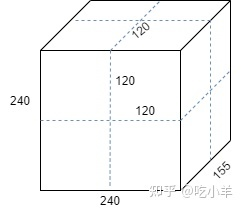
打开Volume Segmenter
打开Volume Segmenter应用程序。单击MATLAB® 工具条上的Apps选项卡。在图像处理和计算机视觉部分，单击Volume Segmenter。
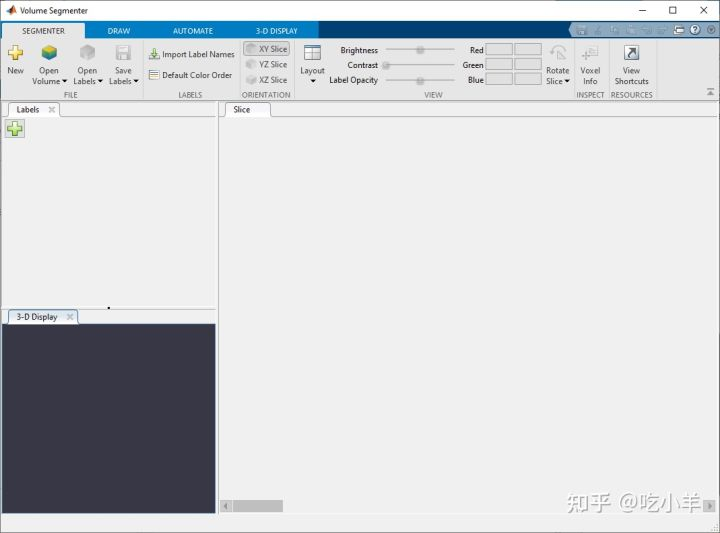
将被阻止的图像加载到 Volume Segmenter 中
要将被阻止的图像加载到Volume Segmenter应用程序中，请在应用程序工具条上选择Open Volume。对于此示例，选择从工作区打开阻止的图像。在“导入体积”对话框中，选择您在工作区中创建的阻止图像bim，然后单击“确定”。或者，您可以在打开应用程序时使用以下volumeSegmenter命令指定被阻止的图像：volumeSegmenter(bim)。
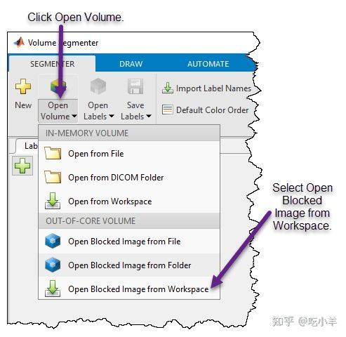
该应用程序加载体积并显示其内容。处理被阻止的图像时，应用程序一次显示一个块的内容。“概览”选项卡指示您当前在整个体积的上下文中查看哪个块。
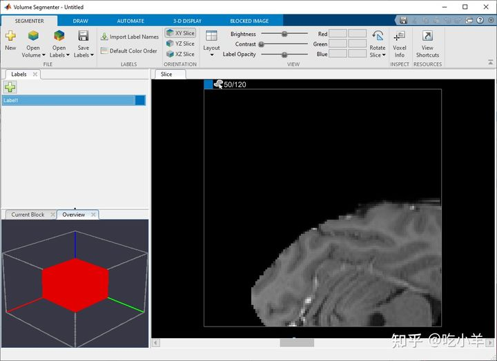
探索被阻止的图像
使用Volume Segmenter应用程序，浏览体积以确定您想要分割的内容。对于被阻止的图像，该应用程序包含多个导航辅助工具，可帮助您探索每个块。
当前块——在当前块选项卡中查看块内容的 3-D 表示。要将方向轴和线框添加到显示中，请使用应用程序工具条的3-D 显示选项卡上的选项。要从不同角度查看块，请使用鼠标旋转显示。
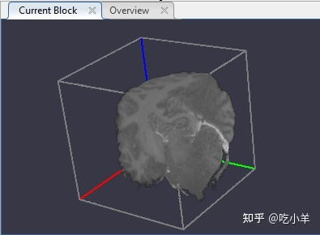
概览-- 显示当前块相对于被阻止图像中其他块的位置。要将方向轴和线框添加到显示中，请使用应用程序工具条的3-D 显示选项卡上的选项。要从不同角度查看块，请使用鼠标旋转显示。当您探索块时，显示会更新以显示您当前选择的块，以及您访问过的块和您标记为完成的块。当前块以红色显示。访问过的块或处理过的块是黄色的。您标记为完成的块是绿色的。
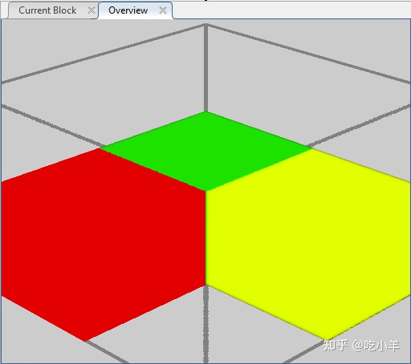
您还可以在应用程序工具条的3-D 显示选项卡中自定义体积的显示。例如，如果您有描述体素相对大小的元数据，您可以在3-D 显示选项卡的空间参考部分中指定它。为了改善数据视图，您可以更改 3-D 显示中使用的背景颜色，修改显示的阈值和不透明度，并在显示中包含方向轴。
阻止图像选项卡——对于被阻止的图像，应用程序向应用程序工具条添加了阻止图像选项卡。此选项卡包含可帮助您在被阻止图像中的块之间移动的导航辅助工具。例如，要移至下一个未处理的块，请单击下一个块。您还可以通过指定沿X 轴、Y轴和Z轴的块坐标移动到特定块。要表明您已完成对块的处理，请单击标记块完成。当您将块标记为完成时，应用程序会计算整个体积的完成百分比。
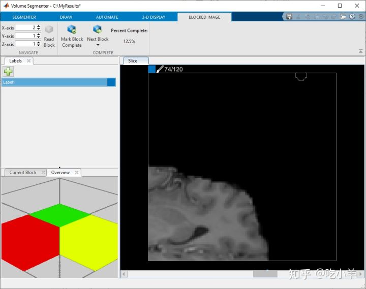
切片窗格-查看在该体积的每片切片窗格。使用窗格底部的滑块在切片之间移动。默认情况下，“切片”窗格显示沿X - Y轴定向的体积，但您可以使用“分割器”选项卡上工具条的“方向”部分中的按钮进行更改。该切片窗格也是您使用绘图工具来定义的ROI。对于块图像，切片视图仅显示当前块。您要分割的对象可能跨越多个块。该应用程序在窗格顶部显示当前切片的数量，在切片总数中。例如，50/120。
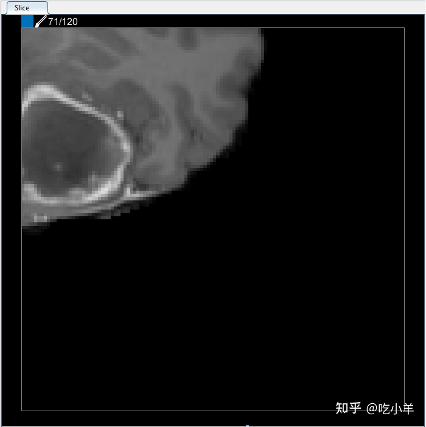
使用绘图工具标记被阻止图像中的区域
确定要分割的对象后，使用应用程序工具条中“绘制”选项卡上的工具在每个块中出现的对象标记该对象。你可以使用任何的绘图工具与封锁的图片：在画笔，将填充区工具的橡皮擦工具，以及徒手绘制，辅助徒手绘制和多边形区域的感兴趣区域（ROI）的形状。
与任何体积一样，要开始标记大脑，首先要创建要在分割中使用的所有标签。在标签窗格中，应用默认提供一个标签，名为Label1。要将标签名称更改为对您的应用程序更具描述性，请双击标签并输入新名称。要更改与标签关联的默认颜色，请双击与标签关联的彩色方块并从“颜色”对话框中选择一种颜色。当一个对象嵌套在另一个对象中时，当肿瘤出现在切片上的大脑上方时，首先标记较大的区域。单击加号按钮以创建其他标签。
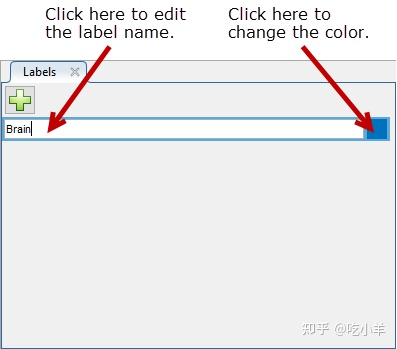
在切片窗格中，导航到对象出现在块中的切片，并使用绘图工具标记对象。此图显示了 画笔工具，但您可以使用任何绘图工具。
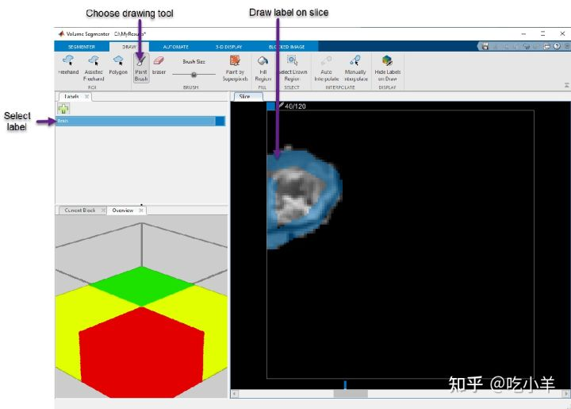
使用插值自动创建 ROI
您可以逐个切片移动块，在对象出现的每个切片上绘制一个 ROI。但是，Volume Segmenter应用程序提供了多种自动化工具，可以帮助跨切片对对象进行分割。这些自动化选项仅处理块内的切片。
要使用插值来加速标记，您必须首先手动标记两个切片上的区域。例如，在一个切片上创建标签并使用相同的过程在另一个切片上定义标签。该应用程序使用与标签关联的颜色在滑块上放置两个条，以指示具有定义的 ROI 的切片。
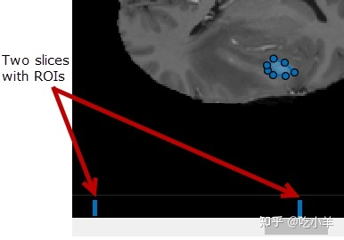
在两个切片上定义对象后，选择Auto Interpolate。该应用程序会自动定义所有中间切片的ROI。该应用程序使用蓝色实心条表示该范围内的所有切片都具有 ROI。
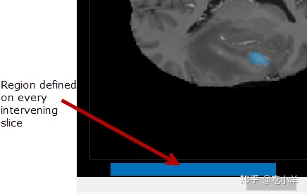
或者，在两个切片上定义 ROI 后，单击Manually Interpolate。使用此选项，应用程序将打开手动插值对话框。您选择要插入的两个区域，区域一和区域二。默认情况下，对话框会在您定义了区域的切片上打开。要选择第一个区域，请单击区域一。使用滑块或单击滑块上方的蓝色指示器，导航到您已在其上定义区域的另一个切片。要选择第二个区域，请单击区域二。选择两个区域后，单击运行以在所有介入切片上插入 ROI。
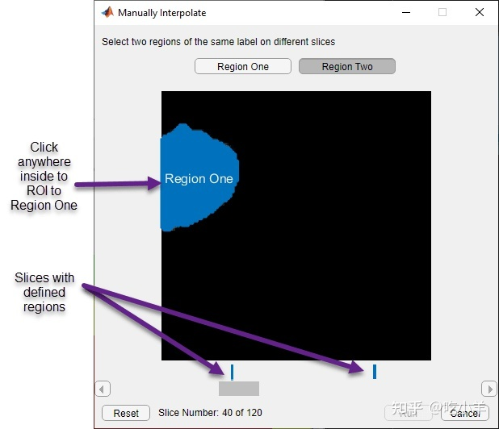
使用自动化来优化标签并执行自定义处理
您可以使用算法来优化标签定义并自动对被阻止的图像执行其他处理。该应用程序在“自动化”选项卡上包含多种基于切片和基于体积的算法。首先，选择算法。例如，在Automate选项卡工具条的Algorithm部分中选择基于体积的算法Otsu's Threshold。选择算法后，选择算法参数为可能与算法关联的任何特定于算法的参数指定值。由于 Otsu 的阈值算法不支持任何参数，因此未启用此选项。对于基于切片的算法，您可以指定要处理的切片：当前切片、从当前切片回到开头或从当前切片到结尾的一组切片。选择算法、指定算法特定参数（如果可用）并选择要操作的载玻片后，单击运行。
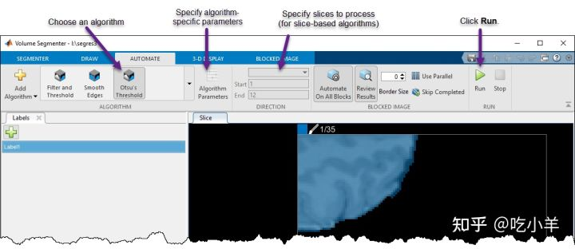
处理所有块并查看结果
处理被阻止的图像时，您还有其他几个选项可用于自动处理。对于块图像，默认情况下，自动化算法对当前块中的切片进行操作。但是，要一次对被阻止图像中的所有块执行自动处理，请单击“自动处理所有块”。如果您已经将某些块标记为已完成，请确保未启用跳过已完成。要启用块的并行处理，请单击使用并行。
要查看处理结果并接受或拒绝每个块，请单击查看结果。该应用程序会显示“查看并接受自动化结果”对话框。选中您接受的每个块的复选框，然后单击“接受选定”以完成。
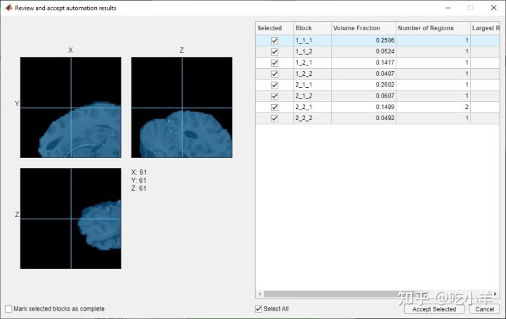
添加自定义自动化算法
您还可以添加自己的算法来对 ROI 进行操作。在自动化选项卡上，单击添加算法。选择您希望处理是在每个 2-D 切片（基于切片）上还是在整个 3-D 体积（基于体积）上运行。
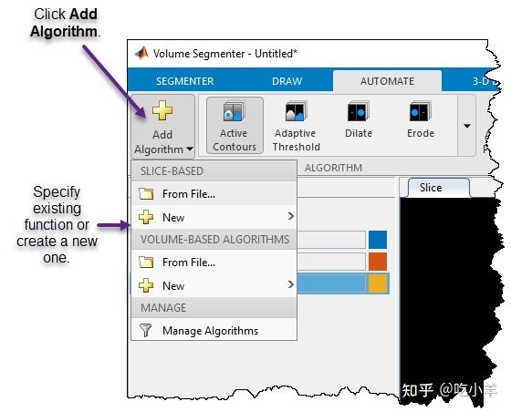
对于本示例，在基于切片下，选择新建选项并单击函数模板以创建一个对每个二维切片进行操作的新函数。该 App 在 MATLAB 编辑器中打开模板。将模板中的示例代码替换为您要使用的代码。您的函数必须接受两个参数：每个切片作为单独的图像和蒙版。您的函数还必须返回一个蒙版图像。
完成模板编辑后，保存文件。Volume Segmenter应用程序会自动在一个按钮自动化您的功能选项卡工具条。要在一个切片上测试您的函数，请单击Run。默认情况下，应用程序仅将函数应用于当前切片。
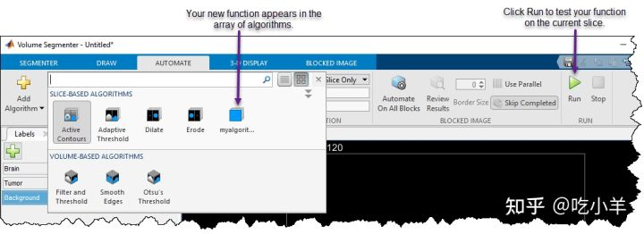
保存分割
完成对体积中的大脑和肿瘤的标记后，保存分割。单击Segmenter选项卡上的Save Labels并从多个选项中进行选择。您可以将标记的 MRI 数据保存为 MAT 文件或工作区中的变量。对于本示例，选择一个工作区变量。当您定义多个标签时，Volume Segmenter应用程序会在工作区中创建一个与输入体积大小相同的分类体积。保存分割后，您可以选择打开Autosave，它会定期自动保存分割。
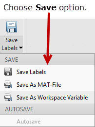
查看标记的体积
要查看蒙版，请使用bigimageshow函数。
======================================================================
我的测试结果及程序
下面是我测试的代码：

注：本文根据MATLAB官网内容修改而成。